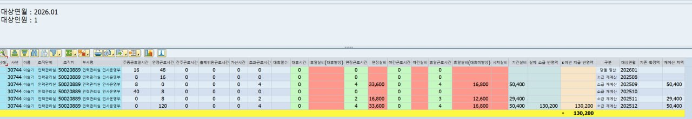

<!doctype html><html lang="ko"><meta charset="utf-8"><meta name="viewport" content="width=device-width,initial-scale=1"><title>ZRPTH411 교육자료</title><style>body{font:15px/1.7 system-ui,-apple-system,sans-serif;margin:0;background:#edf2f7;color:#183047}main{max-width:1700px;margin:auto;padding:28px}h1,h2,h3{line-height:1.3}a{color:#185d9c}section,.notice{background:white;border:1px solid #d4deea;border-radius:8px;margin:18px 0;padding:20px}.notice{border-left:5px solid #bc811a;background:#fff8e7}pre{white-space:pre-wrap;overflow-wrap:anywhere;font:13px/1.65 ui-monospace,monospace}button{padding:8px 12px;background:#f0f5fb;border:1px solid #a9bbd0;border-radius:5px;cursor:pointer}.cols{display:grid;grid-template-columns:minmax(0,1fr) minmax(0,1fr);gap:12px}.pane{min-width:0;border:1px solid #d0dbea}.code{font:12px/1.8 ui-monospace,monospace;overflow:auto;max-height:650px}.line{white-space:pre;display:flex;min-width:max-content;min-height:22px}.num{width:58px;flex-shrink:0;color:#61748a;text-align:right;padding:0 8px;background:#eff3f8;user-select:none}.mark{width:18px;flex-shrink:0;user-select:none}.line code{padding-right:12px}.removed{background:#ffe5e9;color:#901a2c}.added{background:#ddf5e5;color:#155c33}.empty{background:#f4f6f8}.label{padding:10px;background:#edf2f8}.actions{display:flex;gap:12px;align-items:center;flex-wrap:wrap}table{border-collapse:collapse;width:100%}td,th{padding:10px;border-bottom:1px solid #d5dfeb;text-align:left}img{max-width:100%;height:auto}dialog{width:90vw;border:1px solid #9db2cb;border-radius:8px}textarea{width:100%;height:70vh;font:12px/1.6 monospace}nav{display:flex;gap:14px;flex-wrap:wrap}@media(max-width:850px){.cols{min-width:950px}section{overflow:auto}}</style><main><h1>선택근로 소급 정산 화면 개선</h1><p>분석 → 미완성안 실패 → 추가 패치 → 사용자 테스트 → 정렬·표시 개선</p><div class="notice">최신 코드는 제안 누적본이며 서버 재추출본이 아닙니다. 미완성안과 후속 수정 이력을 구분해 읽어주세요. DB 구조·기존 확정 처리 유지.</div><section><h2>자료 바로가기</h2><ul><li><a href="conversation/transcript.html">대화 전문</a></li><li><a href="reports/final-code-report.html">최종 전체 코드 변경 보고서</a></li><li><a href="reports/history/01-first-incomplete.html">미완성안 / 실패 사례</a></li><li><a href="reports/history/02-complete-proposal.html">전체 보완안 이력</a></li><li><a href="reports/history/03-additional-after-first.html">첫 적용 이후 추가 패치</a></li><li><a href="reports/history/04-latest-display-additional.html">최신 정렬·금액 위치 추가 패치</a></li><li><a href="reference/user-attached-code-comparison-complete.html">사용자 첨부 참고 HTML</a></li><li><a href="README.md">포털 관리 에이전트 전달 지침</a></li><li><a href="metadata/stages.json">단계 상태 JSON</a></li></ul></section><section><h2>사용자 테스트 화면</h2></section><section><h2>ABAP 전체 코드</h2><table><tr><th>단계</th><th>소스</th></tr><tr><td>SAP 로컬 추출 원본<br>reference</td><td><a href="code/00-original/ZRPTH411.abap">ZRPTH411</a> · <a href="code/00-original/ZRPTH411TOP.abap">ZRPTH411TOP</a> · <a href="code/00-original/ZRPTH411F01.abap">ZRPTH411F01</a> · <a href="code/00-original/ZRPTH411F02.abap">ZRPTH411F02</a> · <a href="code/00-original/ZHR_52TM_CW_PAYMENT_WKPRD.abap">ZHR_52TM_CW_PAYMENT_WKPRD</a></td></tr><tr><td>첫 HTML 미완성안<br>incomplete_do_not_apply</td><td><a href="code/01-first-incomplete/ZRPTH411.abap">ZRPTH411</a> · <a href="code/01-first-incomplete/ZRPTH411TOP.abap">ZRPTH411TOP</a> · <a href="code/01-first-incomplete/ZRPTH411F01.abap">ZRPTH411F01</a> · <a href="code/01-first-incomplete/ZRPTH411F02.abap">ZRPTH411F02</a> · <a href="code/01-first-incomplete/ZHR_52TM_CW_PAYMENT_WKPRD.abap">ZHR_52TM_CW_PAYMENT_WKPRD</a></td></tr><tr><td>전체 보완 제안<br>historical_proposal</td><td><a href="code/02-complete-proposal/ZRPTH411.abap">ZRPTH411</a> · <a href="code/02-complete-proposal/ZRPTH411TOP.abap">ZRPTH411TOP</a> · <a href="code/02-complete-proposal/ZRPTH411F01.abap">ZRPTH411F01</a> · <a href="code/02-complete-proposal/ZRPTH411F02.abap">ZRPTH411F02</a> · <a href="code/02-complete-proposal/ZHR_52TM_CW_PAYMENT_WKPRD.abap">ZHR_52TM_CW_PAYMENT_WKPRD</a></td></tr><tr><td>첫 HTML 이후 추가 보완<br>user_reported_tested</td><td><a href="code/03-applied-additional/ZRPTH411.abap">ZRPTH411</a> · <a href="code/03-applied-additional/ZRPTH411TOP.abap">ZRPTH411TOP</a> · <a href="code/03-applied-additional/ZRPTH411F01.abap">ZRPTH411F01</a> · <a href="code/03-applied-additional/ZRPTH411F02.abap">ZRPTH411F02</a> · <a href="code/03-applied-additional/ZHR_52TM_CW_PAYMENT_WKPRD.abap">ZHR_52TM_CW_PAYMENT_WKPRD</a></td></tr><tr><td>최신 정렬·당월 금액 표시안<br>latest_proposal_sap_not_verified</td><td><a href="code/04-latest-proposal/ZRPTH411.abap">ZRPTH411</a> · <a href="code/04-latest-proposal/ZRPTH411TOP.abap">ZRPTH411TOP</a> · <a href="code/04-latest-proposal/ZRPTH411F01.abap">ZRPTH411F01</a> · <a href="code/04-latest-proposal/ZRPTH411F02.abap">ZRPTH411F02</a> · <a href="code/04-latest-proposal/ZHR_52TM_CW_PAYMENT_WKPRD.abap">ZHR_52TM_CW_PAYMENT_WKPRD</a></td></tr></table></section></main></html>